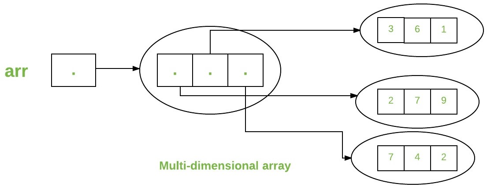

Arrays
Array in java is a group of like-typed variables referred to by a common name.
Arrays in Java work differently than they do in C/C++.
Following are some important points about Java arrays.
In Java, all arrays are dynamically allocated. (discussed below)
Arrays are stored in contiguous memory [consecutive memory locations].
Since arrays are objects in Java, we can find their length using the object property length.
This is different from C/C++, where we find length using sizeof.
A Java array variable can also be declared like other variables with [] after the data type.
The variables in the array are ordered, and each has an index beginning with 0.
Java array can also be used as a static field, a local variable, or a method parameter.
The size of an array must be specified by int or short value and not long.
The direct superclass of an array type is Object.
Every array type implements the interfaces Cloneable and java.io.Serializable.
This storage of arrays helps us randomly access the elements of an array [Support Random Access].
The size of the array cannot be altered(once initialized). However, an array reference can be
made to point to another array.
An array can contain primitives (int, char, etc.) and object (or non-primitive) references of a class depending
on the definition of the array. In the case of primitive data types, the actual values are stored
in contiguous memory locations. In the case of class objects, the actual objects are stored in a heap segment.
array when allocated by new keyword, is automatically initialized by 0 for numeric, false for boolean and null for reference type
// both declaration are valid
int[] arr;
int arr1[];
// allocating memory to array, here each element will be initialized by zero
arr = new int[10];
arr1 = new int[]; // size is must
// both above can be combined into one statement
int[] arr2 = new int[10];
// if size is already known we can write it as
int[] arr3 = new int[]{1,2,3,4,5};
// or
int[] arr4 = {1,2,3,4,5};
// methods and properties of arrays
// length property of object class is used to find length of array
int[] arr = new int[] {1,2,3,4};
System.out.println(arr.length); // 4
// first element is accessed by index [0].. and so on
Array of object in java
// array of object
Student[] s = new Student[5];
// this will create an array of 5 references of type Student having null by default
// we have to intialize each of the created object
for (int i = 0; i
s[i] = new Student();
}
System.out.println(s[0].rollNo);
System.out.println(s[1].rollNo);
}
class Student {
int rollNo;
}
s[i] = new Student();
}
System.out.println(s[0].rollNo);
System.out.println(s[1].rollNo);
}
class Student {
int rollNo;
}
MultiDimensional arrays
Multidimensional arrays are arrays of arrays with each element of the array holding the reference of other arrays.These are also known as Jagged Arrays.
A multidimensional array is created by appending one set of square brackets ([]) per dimension.
// giving size of the first dimension is mandatory in java
// multidimenstion array means each element of array storing another array
// int[][] arr = new int[][]; // not allowed
int[][] arr1 = new int[2][]; // valid
int[][] arr2 = new int[2][2]; // valid
int[][] arr3 = new int[][] {{1,2,3}, {3,4,5}};
int[][] arr4 = {{1,2,3}, {3,4,5}};

Arrays Types and Their Allowed Element Types
Array Types Allowed Element TypesPrimitive Type Arrays Any type which can be implicitly promoted to declared type.
Object Type Arrays Either declared type objects or it’s child class objects.
Abstract Class Type Arrays Its child-class objects are allowed.
Interface Type Arrays Its implementation class objects are allowed.
clone of single and multidimension array
clone of single dimension array is always a deep copy so new object is createdclone on multiple dimension array, main array is deep copy but all subarray are shared so shallow copy
int[] i = new int[]{1,2,3};
int[] j = i; // both i and j refer to same array
System.out.println(i == j);
i[0] = 3;
// j will print 3
System.out.println(j[0]);
int[] i1 = new int[]{1,2,3};
int[] j1 = i1.clone();
System.out.println(j1==i1); // false // as deep copy is created
// multidimesion array// for subarray shared copy is created
int[][] ar = {{1,2},{3,4}};
int[][] ra = ar.clone();
System.out.println(ar==ra); // false as deep clone
System.out.println(ar[0]==ra[0]); // true as subarrays are shalow copy
System.out.println(ar[1]==ra[1]); // true as subarrays are shalow copy